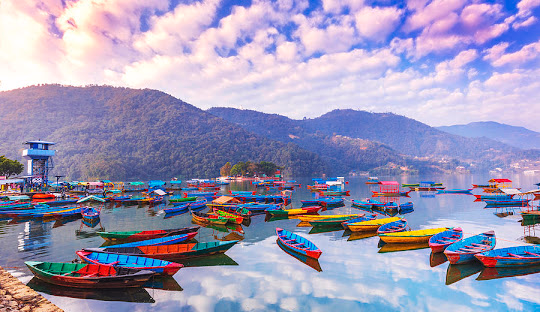
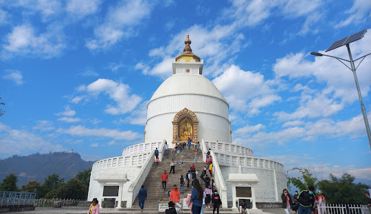

A beautiful Morning in Nepal
Date: May 14, 2026

Nepal is one of the most good place to travel and I have visited a lot of times as I'm living in Nepal.
Many of the places of Nepal is listed in Cultural Heritage of UNICESO and I think people should must travel at once in their life.
Essential Travel Logistics
Date: May 14, 2026

For travelers organizing an adventure through the Nepal Tourism Board, the country offers distinct ecosystems ranging from subalpine peaks to sub-tropical plains:
Readily available via standard visa-on-arrival systems at Tribhuvan International Airport and land border entry points.
The clear, peak trekking seasons run from autumn (October to November) and spring (March to May).
If you are planning a trip, let me know if you would like assistance with a trekking itinerary, checking visa requirements, or finding the best local flight and bus routes.
General crime is low, though standard travel precautions apply in crowded markets. Travelers are encouraged to verify current safety conditions via official portals like the U.S. Travel Advisory for Nepal.